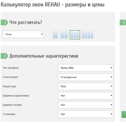
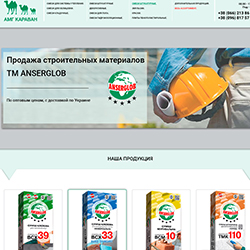
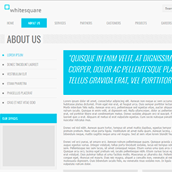

Привет! Меня зовут Фёдор.
Я изучаю веб разработку в компьютерной академии ШАГ.
На этом сайте я
выкладываю свои учебные материалы и практикуюсь.
Также тут можно увидеть моё портфолио.
Буду рад любым
отзывам.

7. Калькулятор окон
Java Script, HTML, CSS

6. Места в кинотеатре
Java Script, jQuery, ОПП Java Script
5. Адаптивная верстка
Html5, css3, Gulp, Sass, Bootstrap
4. Верстка страницы сайта
Html5, css3, JavaScript, Gulp, Sass, Flexbox

3. Верстка страницы сайта
Html, css (главная, контакты)

2. Верстка страницы сайта
Html, css (главная)
1. Дизайн сайта
Дизайн главной страницы сайта, сделанный в фотошопе
Мне можно позвонить:
Мне можно написать в скайп:
Мне можно написать на почту:
Мне можно написать в Viber:
Я на GitHub: